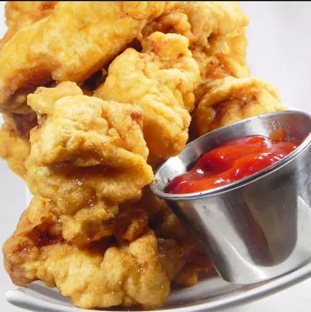

Beer batter Recipe

Description
This beer batter recipe is the key to fried white fish that’s crispy and golden on the outside, but tender on the inside. You can also use it to perfectly fry veggies, shrimp, and so much more!
Ingredients
- Flour
- Cornstarch
- egg
- Seasonings: Garlic powder, black pepper, and seasoning salt.
- Beer, light or dark is fine.
Steps
- Combine flour, cornstarch, egg, garlic powder, seasoning salt, and black pepper in a medium bowl. Whisk in beer until smooth and thick, similar to pancake batter.